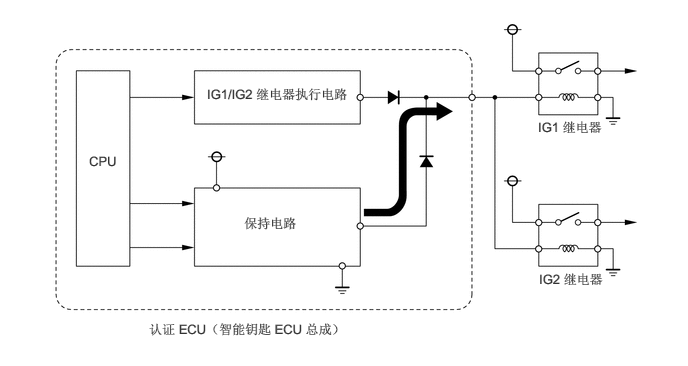

构造
认证 ECU（智能钥匙 ECU 总成）
认证 ECU（智能钥匙 ECU 总成）包括 IG1 继电器和 IG2 继电器执行电路、CPU 以及保持电路。
保持电路提供的目的是在行驶过程中 IG1 继电器和/或 IG2 继电器执行电路出现异常时，防止切断继电器电源。

认证 ECU（智能钥匙 ECU 总成）持续将当前的电源模式存储在存储器中。因此，如果因拆下蓄电池而中断认证 ECU（智能钥匙 ECU 总成）的电源，则重新连接蓄电池后，认证 ECU（智能钥匙 ECU 总成）将恢复电源状态。所以，如果在电源处于除 OFF 外的其他模式时拆下蓄电池，则对认证 ECU（智能钥匙 ECU 总成）恢复供电（通过重新连接蓄电池）的同时车辆也恢复供电。所以，拆下蓄电池前，确保将电源切换至 OFF 模式。